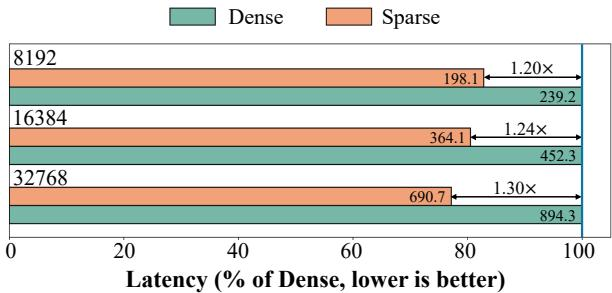

Figureure 2 · Overview of VisionPulseFigure 2. Overview of VisionPulse. At decoding step $t ,$ Vision-Pulse adaptively prunes visual tokens by computing a lightweight visual attention mass $M _ { \mathrm { v i s } } ^ { t }$ to determine the step-wise budget ${ \dot { K } } _ { t }$ , and retains the top- $K _ { t }$ tokens for decoding. Temperature scaling is used to enable adjustable compression ratios.这张图概括 VisionPulse 的整体方法流程。阅读时先看模块之间传递的训练信号，再看作者如何把目标拆成可优化的子问题。

Figureure 5 · End-to-end latency comparison of dense and sparse attention under diffFigure 5. End-to-end latency comparison of dense and sparse attention under different context lengths. We set the batch size to 8 and the generation length to 1k tokens. Numbers on the bars indicate the actual latency (s).这张图/表用于判断 VisionPulse 的实验收益来自哪里。重点看替换、消融或跨模型设置下趋势是否一致，而不是只看单个最高分。
核心问题
视觉基础模型受 token budget 限制，这类动态稀疏会影响可用分辨率和长上下文。
方法拆解
用轻量 visual attention mass 估计每步保留预算，只保留当前 reasoning step 的关键视觉 token。